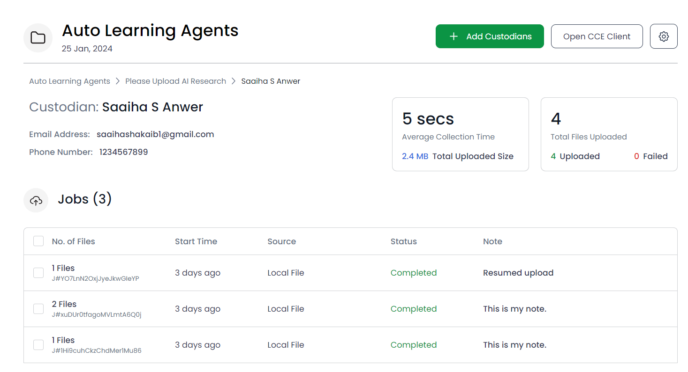
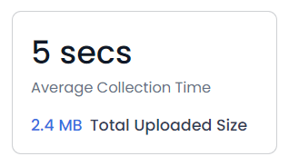
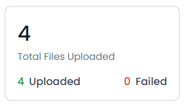
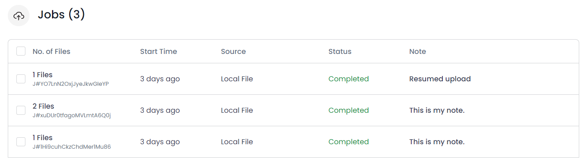
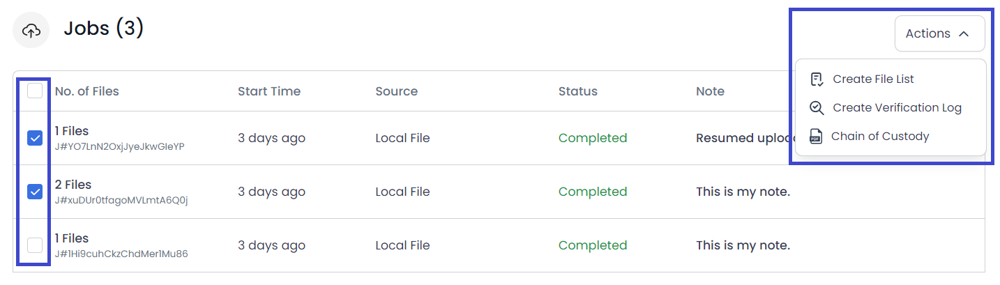
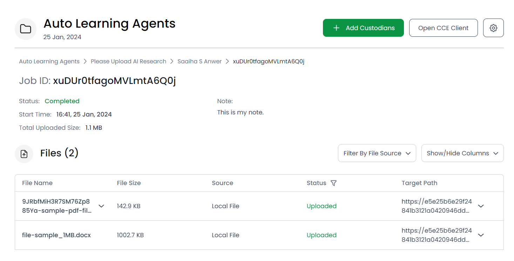
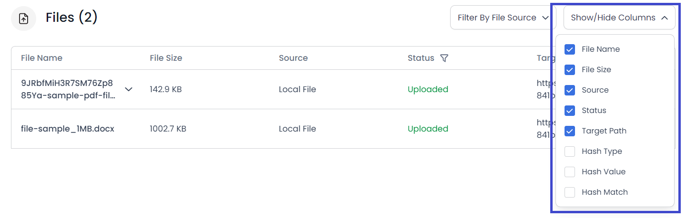
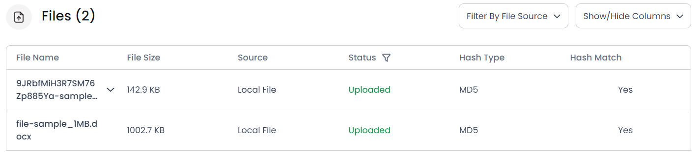

To monitor a custodian’s activities, go to the custodian’s detailed view.
On this screen, you can view the following details of the custodian:
Moreover, you can see the Average Collection Time and Total Uploaded Size of the custodian, i.e. the average time it took the custodian to upload files, and the total size of all the files uploaded by the custodian, respectively.
You can also see the Total Files Uploaded by the custodian, along with how many of those were uploaded successfully and how many failed to upload.
The Jobs table showcases the jobs carried out by the custodian, i.e. files uploaded against the request.
The following information is displayed in the table:
You can select jobs to perform actions on them such as Create Verification Log, etc.
Click on the No. of Files for a specific job to open a detailed view of the job.
This view displays all the details of the selected job, including:
The Files table shows details of all the files uploaded against the job. You can apply filters on the table to view files by the uploaded source, such as Local System, Google Drive, etc. Moreover, you can add and remove columns from the table according to your needs.

For example:
I have hidden the target path but want to see Hash Type and Hash Match. So
I’ll uncheck the Target Path checkbox, and mark the checkboxes against
Hash Type and Hash Match.
This is what my table looks like now:
